Guía práctica da interface, con capturas reais de cada pantalla: como escoller ficheiros e cartafoles, como seguir o progreso dun lote, onde se garda o documento anonimizado, como decidir sobre posibles homónimos e como reverter un código cando faga falta consultar a identidade real.
Windows: menú Inicio → Anonimizador xurídico → Anonimizador de expedientes xurídicos (ou o acceso do escritorio, se o creaches). Mac: dobre clic en Iniciar-Anonimizador.command. Linux: ./Iniciar-Anonimizador.sh.
O programa ábrese nunha xanela de escritorio propia, non no navegador; para pechalo, pecha esa xanela. Por dentro funciona coma un servidor local que só é accesible dende este mesmo ordenador (127.0.0.1), nunca dende fóra. (Só en Linux, se o sistema non ten GTK e WebKit2GTK, o programa ábrese no navegador en http://127.0.0.1:5050; e en Windows sen o compoñente WebView2 ofrece facelo.)
Escolle o ficheiro ou o cartafol (ou escribe a súa ruta)
O botón «Escoller ficheiro…» abre o diálogo nativo do sistema (Explorador de Windows, Finder). O botón «Escoller cartafol…» abre o explorador de cartafoles do propio programa (ver sección 03). Tamén podes escribir ou pegar a ruta directamente no campo.
Cartafol de saída (opcional)
Se o deixas baleiro, o ficheiro anonimizado gárdase canda o orixinal (comportamento de sempre). Se queres que vaia a outro sitio (ex. un cartafol distinto para entregar), indícao aquí co seu propio botón «Escoller cartafol…».
Indica o cartafol do rexistro
Por defecto ./datos_rexistro. É o cartafol onde queda gardada, cifrada, a correspondencia entre cada código e a persoa real. Usa sempre o MESMO cartafol para todos os documentos dun mesmo caso, así os códigos son consistentes entre eles. En Windows, o cartafol por defecto está en %LOCALAPPDATA%\Anonimizador\datos_rexistro.
Escolle como procesar e preme o botón
«Comprobar antes de gardar» (botón «Anonimizar e revisar») ou «Anonimización automática» (ver sección 04). Ao premer, aparece a pantalla de progreso (sección 05) e, cando remata, a pantalla de revisión (ou o resultado, en modo automático).
O cartafol do rexistro (datos_rexistro ou o nome que lle deses) contén clave.key (ou nada, se usas o chaveiro do sistema, que é o normal), rexistro.enc e auditoria.enc.
NON O BORRES NIN O MOVAS mentres sigas a traballar co mesmo caso: é a única forma de manter os códigos consistentes e de poder reverter un código no futuro.
Ao premer calquera botón «Escoller cartafol…» (o do documento, o de saída ou o do rexistro) ábrese o explorador do propio programa. A diferenza do diálogo nativo do sistema, que só amosa cartafoles, este amosa tamén os ficheiros que hai dentro, para que poidas recoñecer o cartafol correcto antes de escollelo.
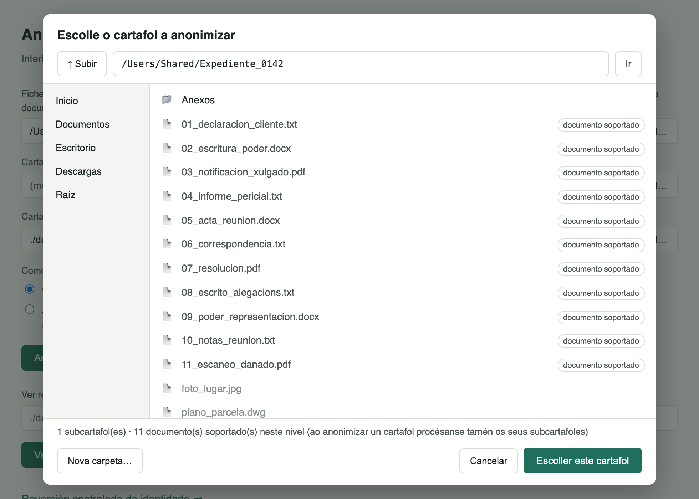
.txt, .docx, .odt, .pdf) levan a etiqueta «documento soportado». Os ficheiros e cartafoles ocultos non se amosan.O explorador só lista o contido dos cartafoles: nunca le, move nin borra ficheiros.
Antes de premer o botón, escolle como queres que se procese o documento (ou o cartafol enteiro). «Comprobar antes de gardar» é o comportamento xa visto: revisas un a un os posibles homónimos e riscos antes de confirmar (seccións 07 e 08). A opción «Anonimización automática» garda directamente, sen deterse a agardar a túa confirmación:
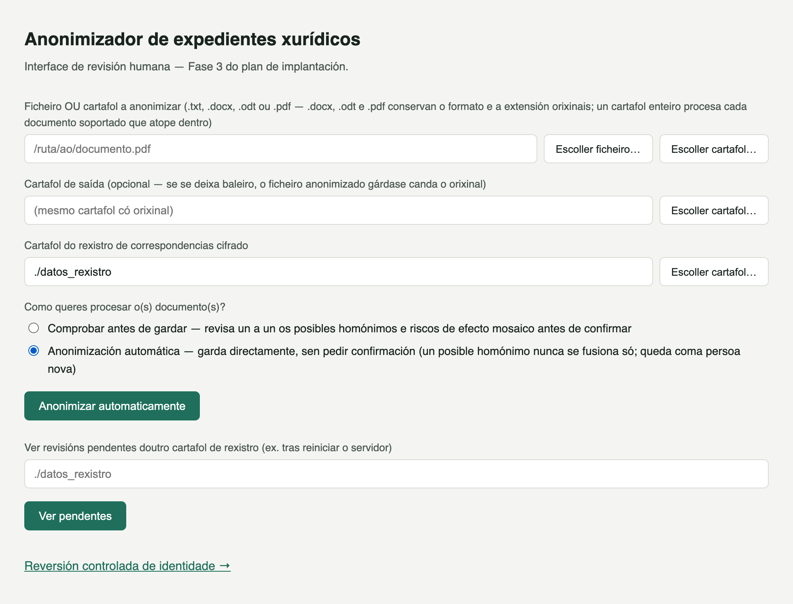
Non se crea ningunha sesión de revisión: o ficheiro final gárdase inmediatamente, coa mesma regra de nomes e formato da sección 08.
Un posible homónimo NUNCA se fusiona só: se o sistema atopa o mesmo nome noutro documento sen DNI que o confirme, crea igualmente un código NOVO — exactamente coma se tiveses escollido «Manter como persoa distinta» a man (sección 07). A fusión require sempre unha decisión humana expresa.
Os riscos de efecto mosaico non se corrixen automaticamente en ningún dos dous modos — seguen a facer falta ollos humanos para xeneralizar un dato, e o modo automático non pode facelo por ti.
No modo automático, «manter separadas» dúas posibles coincidencias de nome queda decidido — xa non hai unha sesión de revisión pendente para cambialo despois. Se sabes de antemán que un caso ten homónimos reais que precisan fusionarse, usa «Comprobar antes de gardar» para eses documentos.
Cando usar cada modo. Comprobar antes de gardar: recomendado con poucos documentos, ou cando xa sabes que hai homónimos no expediente que precisarán fusionarse a man. Anonimización automática: útil para lotes grandes de documentos dun caso xa coñecido (ex. un cartafol enteiro), onde revisar sesión a sesión sería lento e o risco de homónimos é baixo.
Ao premer o botón, en calquera dos dous modos e tanto cun ficheiro coma cun cartafol enteiro, a pantalla inicial dá paso a unha pantalla de progreso que mostra en cada momento como vai o traballo:
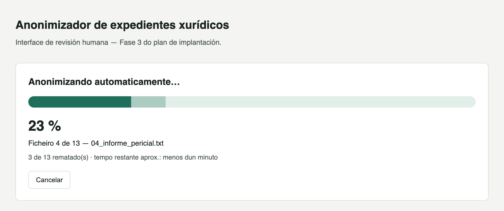
Un ficheiro estragado (por exemplo, un PDF que non se pode abrir) non detén o lote: o programa segue co resto e, ao final, lista os fallos xunto co motivo. No modo automático, o resultado é este:
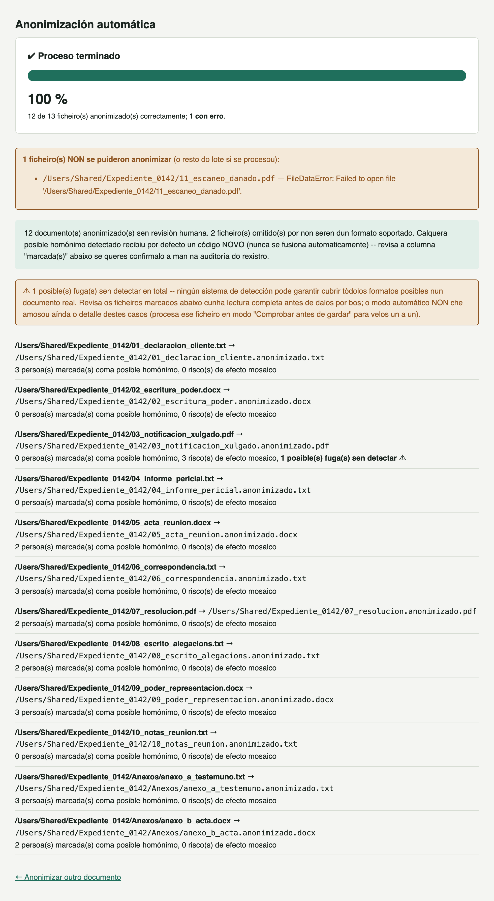
Cando o proceso ten máis dun ficheiro (un cartafol), aparece un botón «Cancelar» debaixo da barra. Ao premelo o botón pasa a «Cancelando…»: o programa remata o ficheiro que ten entre mans (un ficheiro non se pode deixar a medias) e non empeza ningún máis. O que xa estaba feito queda feito e o que non se procesou non se toca. Un ficheiro solto non ten botón de cancelar, porque se procesa dun golpe.
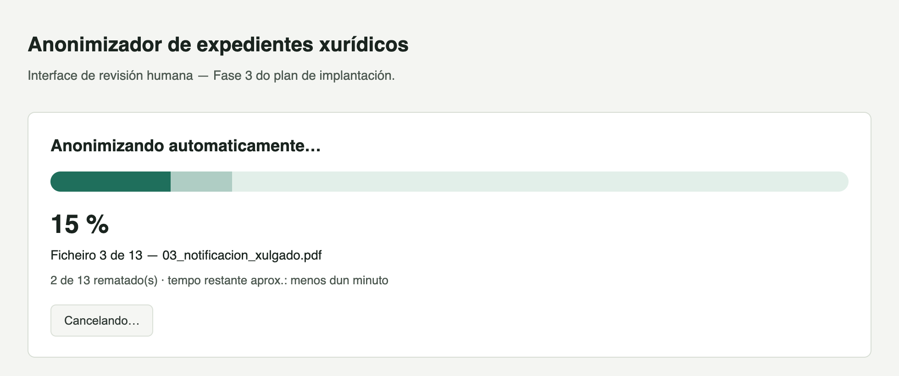
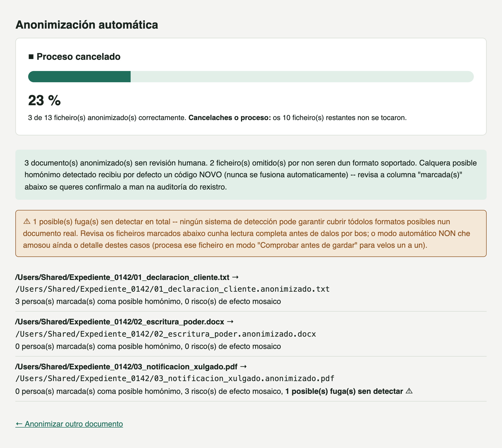
A mensaxe final di «Cancelaches o proceso: os K ficheiro(s) restantes non se tocaron» (modo automático) ou «Proceso cancelado: N de M ficheiro(s) procesado(s) (pendentes de revisión abaixo); o resto non se tocou» (modo revisión).
No canto dun ficheiro solto, o mesmo campo acepta un CARTAFOL: procésase automaticamente cada documento soportado (.txt, .docx, .odt, .pdf) que atope dentro, buscando tamén en subcartafoles. En modo revisión créase unha sesión de revisión propia para CADA documento — nunca se garda nada en bloque sen revisar antes.
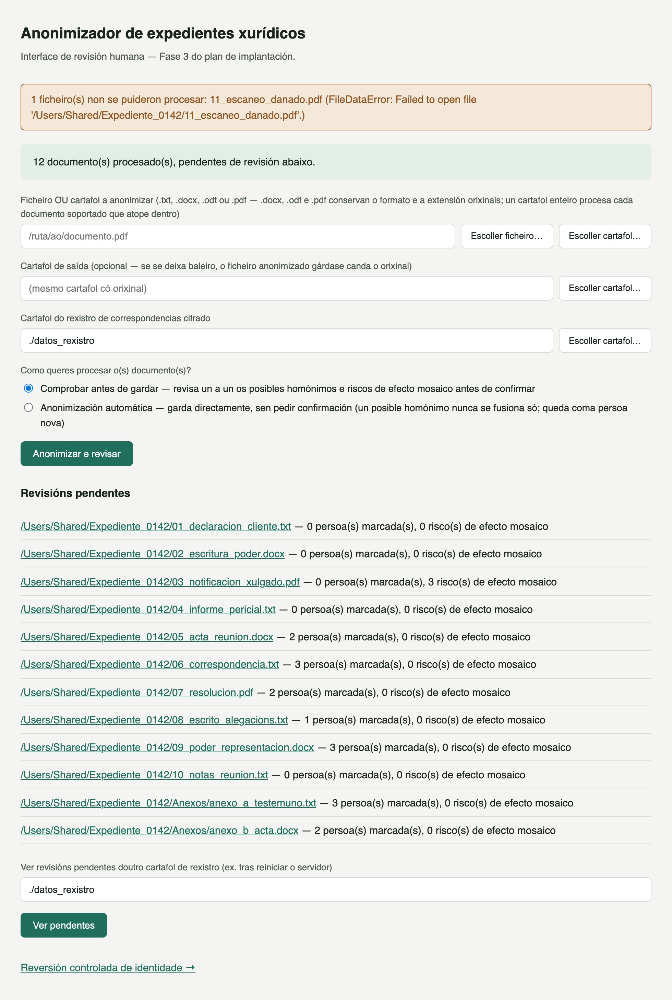
Os ficheiros dun formato non soportado (planos, imaxes…) quedan fóra e cóntanse coma «omitidos» — nunca se inclúen nin se modifican. Revisa cada sesión pendente da lista unha a unha, exactamente igual que se procesases os documentos por separado.
Se procesas de novo un cartafol onde xa gardaches resultados dunha pasada anterior (ficheiros nome.anonimizado.pdf, .docx, .odt ou .txt), eses ficheiros non se volven anonimizar: contan como «omitidos» no resumo. Se queres ter os resultados separados dos orixinais, indica un «Cartafol de saída» (sección 02).
A pantalla de revisión amosa varios bloques: posibles fugas sen detectar (só se as hai), persoas marcadas para confirmar, riscos de efecto mosaico detectados, e o texto final editable. No exemplo seguinte, o propio documento menciona dúas persoas co mesmo nome (o declarante e «o seu sobriño») — o sistema créalles códigos distintos e pide confirmación:
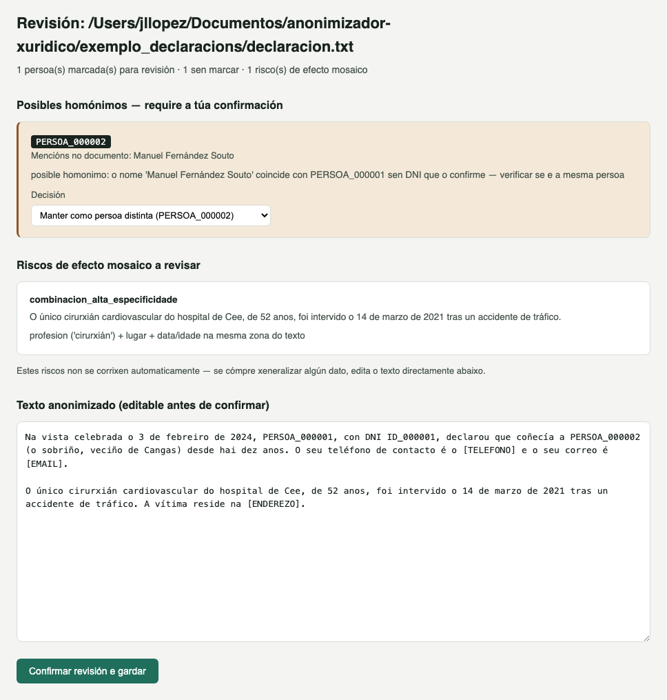
No despregable de cada persoa marcada, escolle:
Cando un segundo documento menciona un nome xa visto antes (nun documento distinto) sen DNI que o confirme, o sistema faille o mesmo tratamento — créase un código novo marcado, coa suxestión de fusionar co código xa existente:
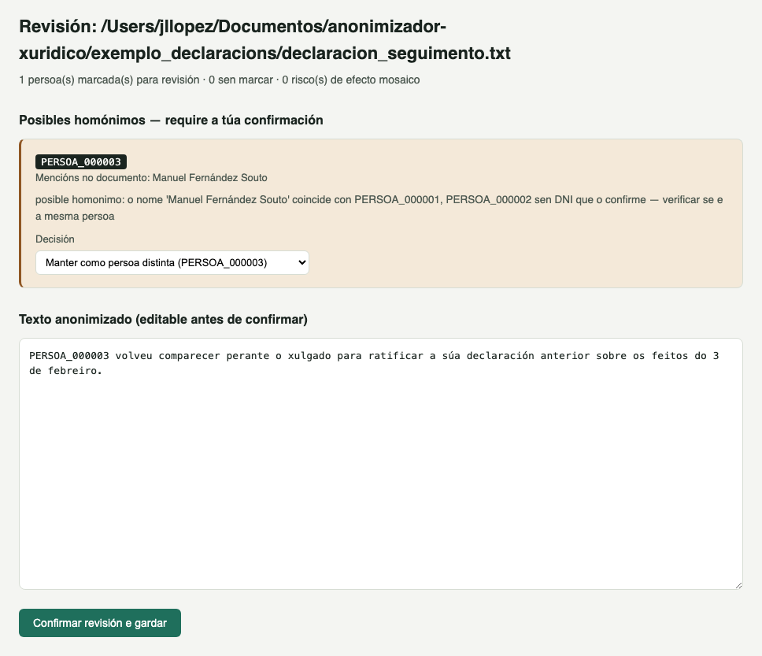
Os riscos de efecto mosaico (combinacións como profesión + lugar + idade que poderían identificar a alguén aínda sen o nome) NON se corrixen automaticamente — se cómpre xeneralizar algún dato («cirurxián cardiovascular de 52 anos» → «un profesional sanitario»), edita directamente o texto no recadro antes de confirmar.
Antes do bloque de homónimos, a pantalla pode amosar avisos dunha rede de seguridade final: o programa volve escanear o texto xa anonimizado por se queda algún patrón que aínda pareza un dato persoal (por exemplo, un nome en formato «Apelidos, Nome» sen redactar, ou un número solto de 7 a 9 díxitos). Non redacta nada por si mesma: só avisa, para que o revises. Os avisos de confianza baixa (moitos serán institucións ou lugares, non persoas) quedan recollidos nun despregable de «revisións opcionais».
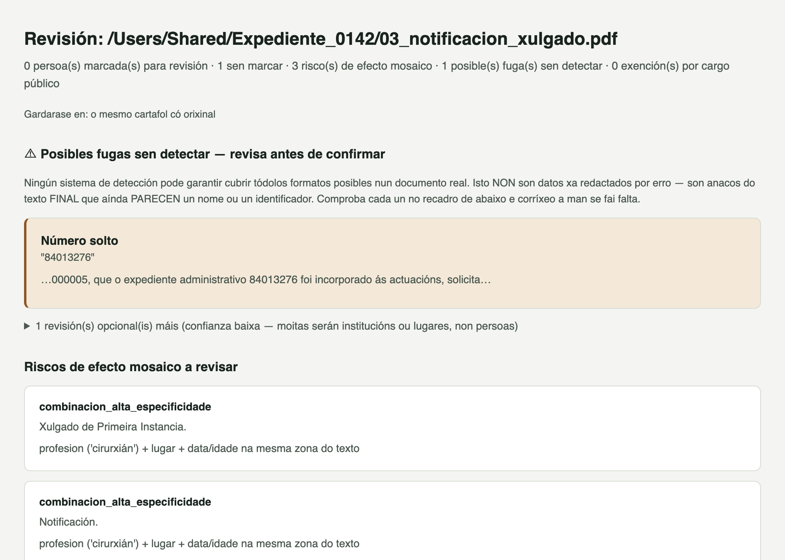
Ningún sistema de detección pode garantir cubrir tódolos formatos posibles nun documento real: estes avisos non son datos xa redactados por erro, son anacos do texto final que aínda PARECEN un nome ou un identificador. Comproba cada un e corríxeo a man no recadro se fai falta. Móstrase tamén no resumo do modo automático («⚠ N posible(s) fuga(s) sen detectar») e na saída da liña de comandos.
Ao premer «Confirmar revisión e gardar»:
.anonimizado antes da extensión. Por exemplo, declaracion.txt → declaracion.anonimizado.txt. Os .docx, .odt e .pdf conservan o seu formato e a súa extensión orixinais; calquera outro formato gárdase coma .anonimizado.txt.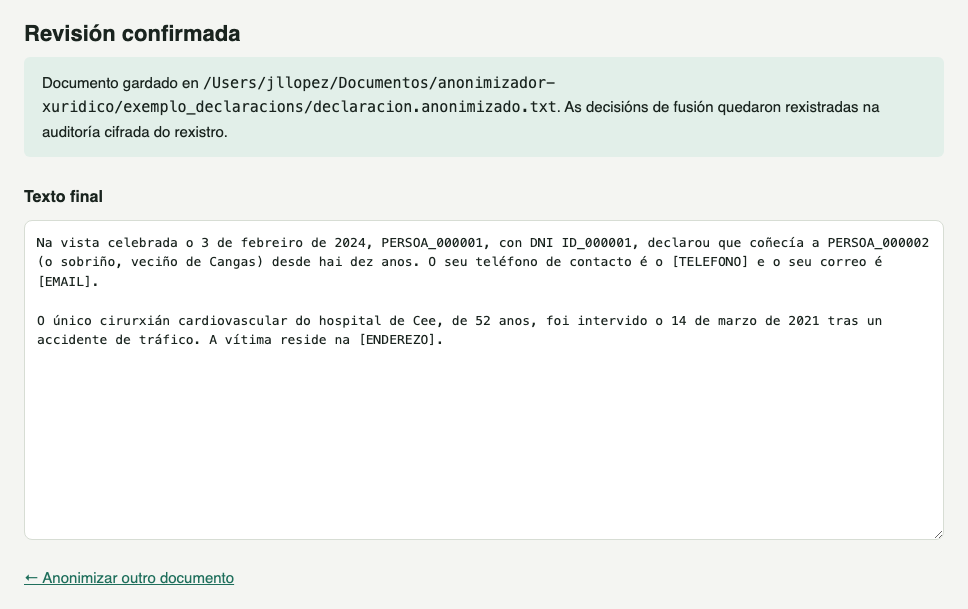
Cando a decisión foi fusionar dous códigos, a pantalla de confirmación indícao explicitamente:
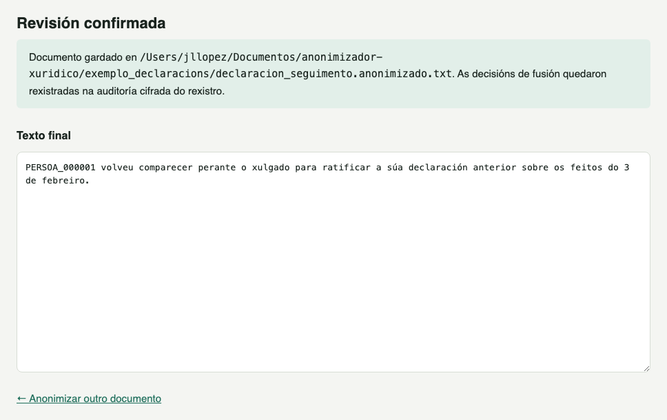
Se pechas o programa ou reinicias o ordenador antes de confirmar unha revisión, non se perde: volve abrir o programa, escribe o mesmo cartafol de rexistro no campo «Ver revisións pendentes doutro cartafol», e retómaa exactamente onde a deixaches.
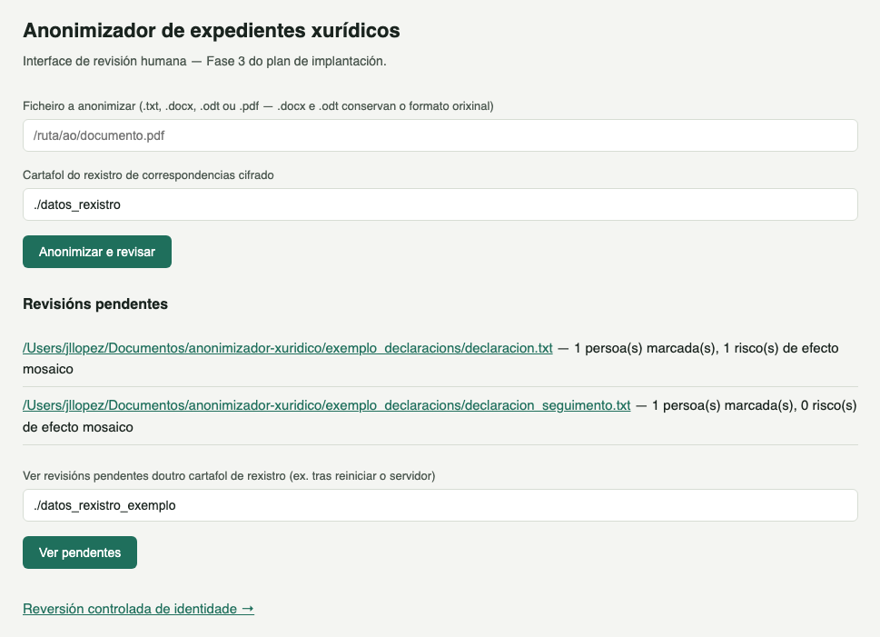
Cando precises consultar a identidade real detrás dun código (por exemplo, para presentar o documento orixinal nun xulgado), usa a ligazón «Reversión controlada de identidade» da pantalla inicial. O formulario esixe tres cousas: o código, un motivo (sempre obrigatorio) e a contrasinal de reversión.
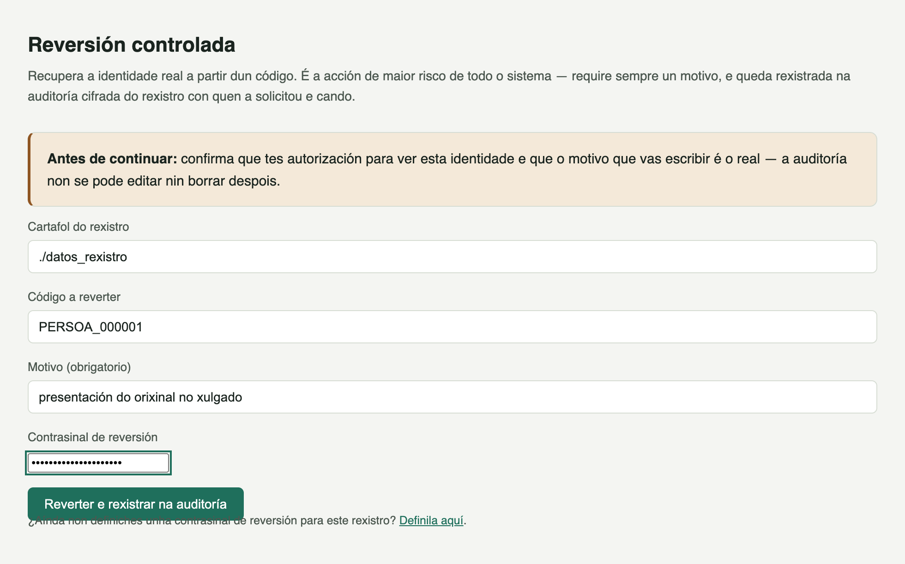
A reversión é a única función que devolve datos identificativos reais. Escribe sempre o motivo real: queda gravado de forma permanente na auditoría cifrada, xunto co usuario do sistema que a executou e a data. Non se pode editar nin borrar despois.
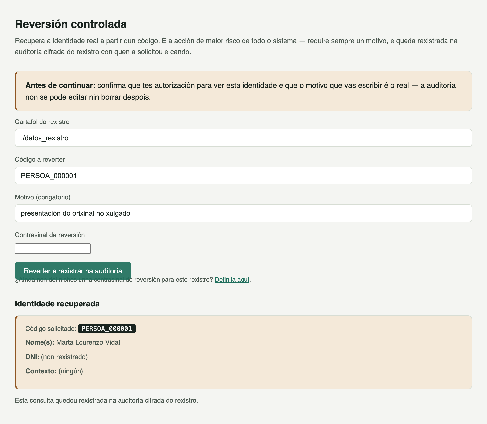
É unha segunda barreira, á parte da clave de cifrado: evita que outra persoa que comparta o ordenador abra o programa e reverta identidades reais sen coñecela. Defínese unha vez por cada rexistro na ligazón «Definila aquí» do propio formulario (mínimo 8 caracteres; hai que escribila dúas veces, e para cambiala máis tarde pídese a actual). Un intento con contrasinal incorrecta non revela nada e queda rexistrado na auditoría.
Non é unha capa de cifrado adicional: quen teña acceso ao ficheiro clave.key (ou ao chaveiro do sistema) e ao ficheiro rexistro.enc pode descifrar as identidades directamente, sen coñecer esta contrasinal. Por iso segue a ser imprescindible gardar ben eses dous elementos por separado.
A reversión require coñecer de antemán o código a consultar. Cando o que precisas é revisar un expediente enteiro dun golpe (por exemplo, unha auditoría interna, ou localizar un código que se fusionou noutro), usa a ligazón «Listado completo de correspondencias» da pantalla inicial. Amosa nunha soa táboa todos os códigos do rexistro cos seus nomes, DNI, contexto e data de creación.
Esta pantalla require exactamente o mesmo có formulario de reversión — motivo obrigatorio e contrasinal de reversión — máis unha casiña adicional de confirmación explícita, porque expón de golpe TODAS as identidades reais do rexistro, non unha soa. Queda rexistrada na auditoría cunha acción distinta da reversión individual (listado_completo), co alcance exacto do que se viu. Se o rexistro ten moitas persoas, o listado paxínase de 200 en 200; cada páxina volve pedir a contrasinal e queda auditada á parte.
Un código que xa non aparece coma fila propia (porque se fusionou noutro tras confirmar un homónimo) séguese vendo na columna «Fusionados neste» do código co que quedou, así que ningún código antigo dun documento vello desaparece do listado.
Debaixo da táboa hai un botón «Xerar PDF confidencial». O PDF leva o listado enteiro, en horizontal, co motivo, quen o xerou e a data na cabeceira, un aviso de extrema sensibilidade e a marca de auga «CONFIDENCIAL» en todas as páxinas. Para xeralo pídese de novo a contrasinal de reversión e unha casiña que confirma que entendes que é un documento de extrema sensibilidade; a xeración queda na auditoría coma listado completo «XERADO PDF CONFIDENCIAL».
Fóra de contexto perde valor, pero xunto cos documentos anonimizados permite reverter o anonimato. Non o envíes por correo, non o deixes nun cartafol compartido ou sincronizado coa nube e destrúeo cando xa non faga falta.
Cando o documento orixinal é un .docx ou .odt, o ficheiro anonimizado mantén a mesma maquetación: aliñamento, listas, táboas e estilos de texto (negriña, cursiva) por separado dentro de cada parágrafo. Podes editar con confianza dentro de cada liña do recadro de revisión, pero evita engadir ou quitar saltos de liña enteiros — se o fas, o sistema detecta a desaliñación e garda coma texto plano en vez de arriscar un documento incorrecto (avísache na pantalla de confirmación se isto ocorre).
Un .pdf tamén mantén o seu formato E a súa extensión. Funciona igual con PDF con texto normal e con PDF escaneados: os datos elimínanse de verdade do documento (non quedan «debaixo» dun recadro branco) e substitúense polo código correspondente, mantendo o aspecto visual do orixinal:
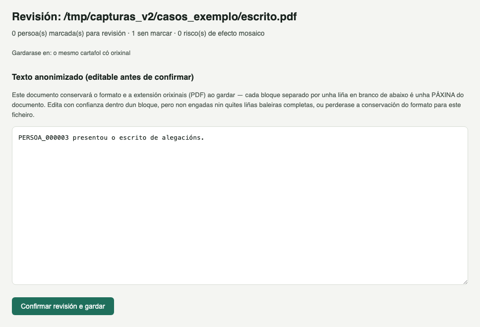
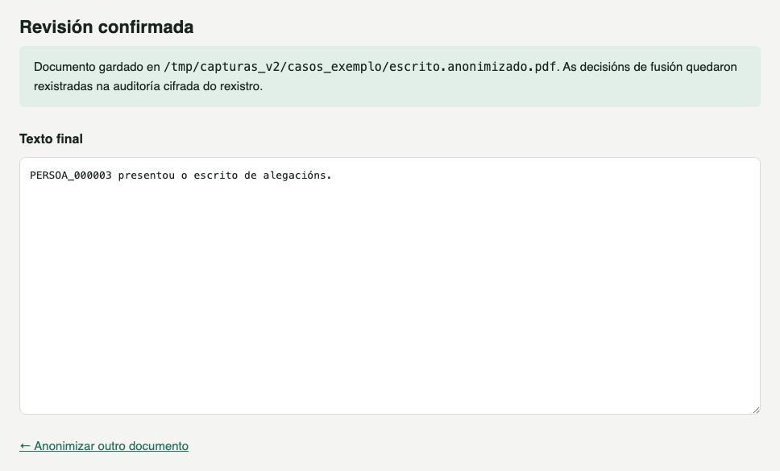
Nun PDF, a edición á man dunha páxina completa (engadir texto novo, por exemplo) fai que ESA páxina en concreto perda o formato orixinal ao gardar (redáctase enteira e reescríbese en fonte xenérica) — o resto de páxinas do mesmo documento non se ven afectadas.
Se o ficheiro que indicas na pantalla inicial é un .zip (por exemplo, un expediente completo con varios documentos e planos), o sistema anonimiza cada ficheiro soportado dentro (.pdf, .docx, .odt, .txt) mantendo a estrutura de cartafoles e o formato/extensión orixinais de cada un, e xera un novo .anonimizado.zip. Os ficheiros que non se poden analizar (planos CAD, imaxes…) NON se inclúen no zip de saída, para non arriscar que quede algo sen revisar — quedan listados á parte coma «omitidos». Documentos moi longos (centos de páxinas) procésanse sen problema, en anacos internos que non che afectan como usuario.
| Pregunta | Resposta |
|---|---|
| Onde exactamente se garda o ficheiro anonimizado? | No mesmo cartafol có orixinal, engadindo .anonimizado ao nome (ver sección 08). |
| Podo cambiar o cartafol de saída? | Si, co campo «Cartafol de saída» da pantalla inicial (sección 02). O NOME do ficheiro segue a regra fixa (<nome>.anonimizado.<extensión>) en calquera caso. |
| Que pasa se anonimizo o mesmo documento dúas veces? | Sobrescríbese o ficheiro .anonimizado anterior; o rexistro non crea códigos duplicados para as mesmas persoas grazas á consistencia por DNI. |
| Podo usar cartafoles de rexistro distintos para casos distintos? | Si, e é recomendable — así os códigos dun caso non se mesturan cos doutro. |
| Como sei se un documento leva OCR ou lectura directa? | Non fai falta indicalo: detéctase automaticamente páxina a páxina dentro dun PDF. |
| Podo anonimizar varios documentos dun cartafol dunha vez? | Si (seccións 04 e 06) — indica o cartafol en vez dun ficheiro. En modo revisión, cada documento leva a súa propia revisión humana antes de gardarse. |
| Un ficheiro do cartafol falla: perdo o resto? | Non. O lote segue co resto e ao final listan os fallos co seu motivo (sección 05). |
| Empecei un lote longo e quero parar. Que fago? | Preme «Cancelar» na pantalla de progreso: remata o ficheiro en curso e non empeza ningún máis; o que xa estaba feito queda feito (sección 05). |
| Por que non se abre ningún diálogo ao premer «Escoller ficheiro…»? | Comproba que non haxa outra xanela do sistema xa aberta detrás — o diálogo nativo ás veces aparece detrás da xanela do programa a primeira vez. Sempre podes escribir a ruta a man. |
| Onde están os meus datos en Windows? | En %LOCALAPPDATA%\Anonimizador: datos_rexistro (rexistros cifrados) e anonimizador.log (rexistro de erros). Non se tocan ao actualizar nin ao desinstalar o programa (o desinstalador pregunta antes de borrar os rexistros). |
| E en Mac e Linux? | Desde a versión de outubro de 2026, fóra do cartafol do programa: ~/Library/Application Support/Anonimizador (Mac) ou ~/.local/share/anonimizador (Linux). Un rexistro antigo que estivese dentro do cartafol do programa trasládase alí só a primeira vez que se abre a versión nova. |
| Podo ver todas as correspondencias dun caso dunha vez? | Si, coa ligazón «Listado completo de correspondencias» da pantalla inicial (sección 10). Require motivo e contrasinal coma a reversión, máis unha confirmación explícita, e queda rexistrado coma acceso masivo. |